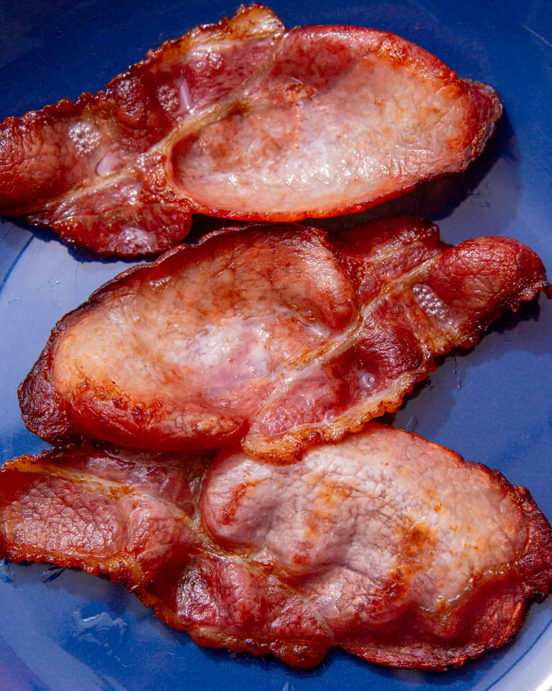

Bacon in tomato sauce

Bacon simmmered down in a tomato based sauce with onions and a variety of herbs.
Ingredients
- 2 Medium sized onions
- 1 Pack of bacon or 400 grams
- Tomato Puree
- Mixed Herbs
- Black pepper
- Vegetable stock
Method
- Fry the bacon until the fat is crispy and golden
- Add the onions and cook till translucent and soft
- Add the tomato puree and fry off for two minutes
- Add the stock as well as mixed herbs and black pepper
- Turn the heat up to bring to a boil then reduce down to a simmer